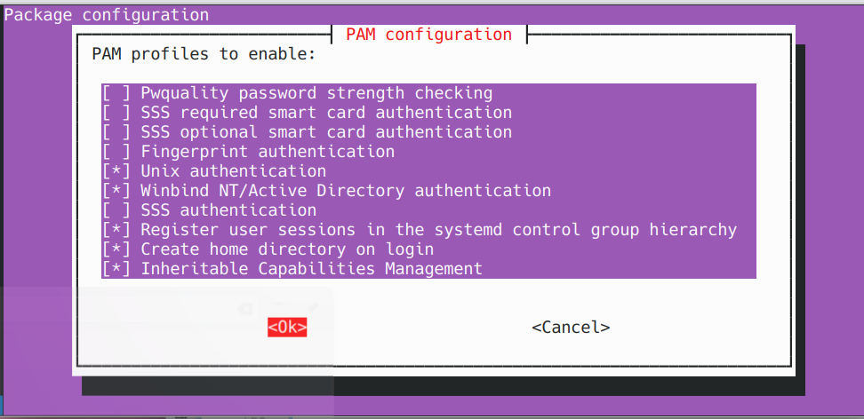

Joining Ubuntu-Based Linux Devices to Windows Server 2025 Active Directory (Winbind Method)
Use this guide to join a Debian/Ubuntu-based Linux system (like KDE Neon, Mint or Zorin) to a Windows Server 2025 AD domain using winbind, samba, and Kerberos.
📋 Prerequisites
- Windows Server 2025 configured as Domain Controller
- Domain name
- AD server IP
- Domain join account
- Linux client with sudo access
1. Set hostname
- Run:
-
Replace any instance of the old hostname.
-
Reboot:
2. Set dns to the ad server
- Point
/etc/resolv.confto your server:
- Add:
3. Install required packages
- Run:
- When prompted the Kerberos installer, enter your default realm.
- Leave other prompts blank and press Enter.
4. Configure Kerberos
sudo nano /etc/krb5.conf
- Update to:
5. Configure Samba
- Backup and replace
/etc/samba/smb.conf:
- Paste in:
[global]
workgroup = <workgroup>
realm = <domain-name>
security = ads
client signing = yes
client use spnego = yes
kerberos method = secrets and keytab
log file = /var/log/samba/%m/log
log level = 1
winbind refresh tickets = yes
winbind use default domain = yes
winbind offline logon = yes
idmap config * : backend = tdb
idmap config * : range = 10000-20000
template shell = /bin/bash
template homedir = /home/%U
How to Select all in Nano Text Editor
- Press "Alt + Backslash" keys together. This moves the cursor to the start of the file.
- Press "Ctrl + 6" keys together. This sets a mark at the current cursor position.
- Press "Alt + Forward Slash" keys together. This moves the cursor to the end of the file.
- Press "Ctrl Shift K keys together. This will clear all selected text.
6. Configure nss
sudo nano /etc/nsswitch.conf
- Add winbind to these lines:
7. Restart services
- Enable on boot:
8. Test kerberos and join domain
- Test authentication:
You'll most likely see a password expiration message, that's fine.
- Then join:
Seeing DNS update failed is normal.
9. Test identity resolution
10. Enable domain login and home creation
- Edit PAM and enable home dir creation:
Below is what your pam settings should look like:

11. Reboot and log in
sudo reboot
- Log in with domain user credentials.
- The system will create a home folder for the user.
Success! Your Linux device is now joined to the Windows Server 2025 Active Directory domain using the winbind.
🛠️ Troubleshooting & Common Issues
* kinit: Cannot find KDC for realm "<REALM>"
Fix:
- Ensure /etc/resolv.conf points to your DC IP
- Verify default_realm is UPPERCASE in /etc/krb5.conf
- Test DNS:
* net ads join returns DNS update failed!
Fix:
Usually safe to ignore if you can log in and resolve domain names.
* Login fails after join
Fix:
- Ensure winbind is running:
* getent passwd <domain-user> returns nothing
Fix:
- Check /etc/nsswitch.conf has winbind on the correct lines.
- Restart windbind:
* winbind -u and -g return nothing
Fix:
- Validate /etc/samba/smb.conf and /etc/krb5.conf formatting.
- Ensure realm and workgroup are correct.